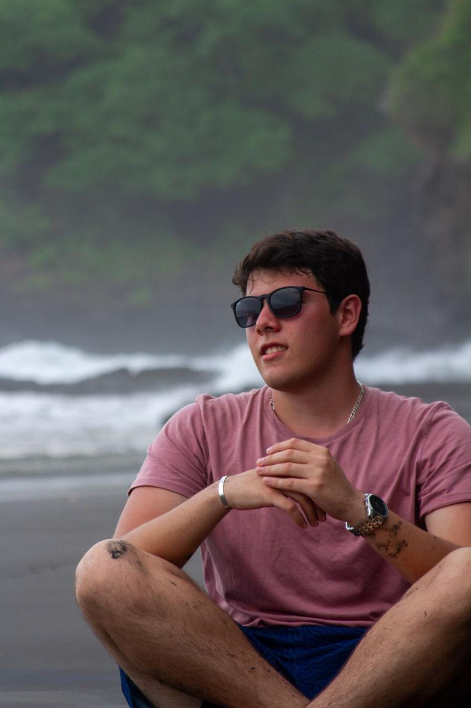

My name is Rolando Antonio Zelaya Bulnes. I was born on August 23, 2003, making me 21 years old. I currently live in El Salvador with my parents and my older brother.
n my free time, I enjoy playing video games and watching soccer. I have a fondness for the color yellow and love indulging in pasta and pizza. These simple pleasures bring me a lot of joy and help me unwind from the demands of everyday life.
n my free time, I enjoy playing video games and watching soccer. I have a fondness for the color yellow and love indulging in pasta and pizza. These simple pleasures bring me a lot of joy and help me unwind from the demands of everyday life.